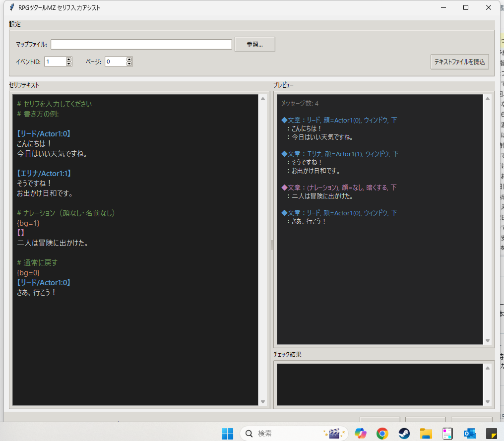
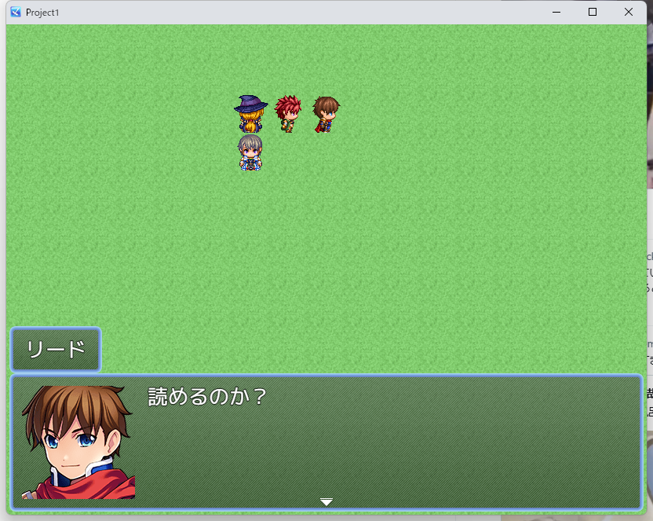
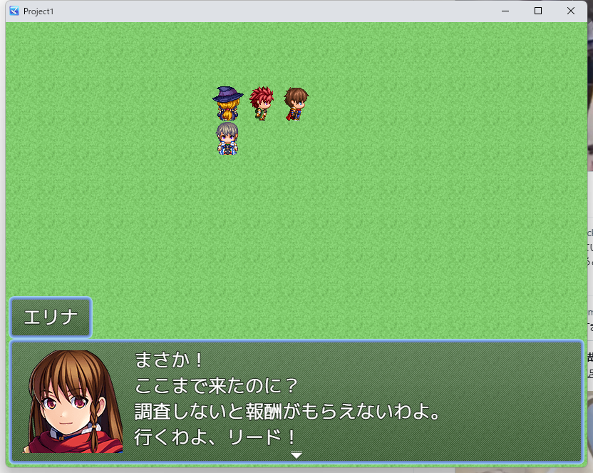
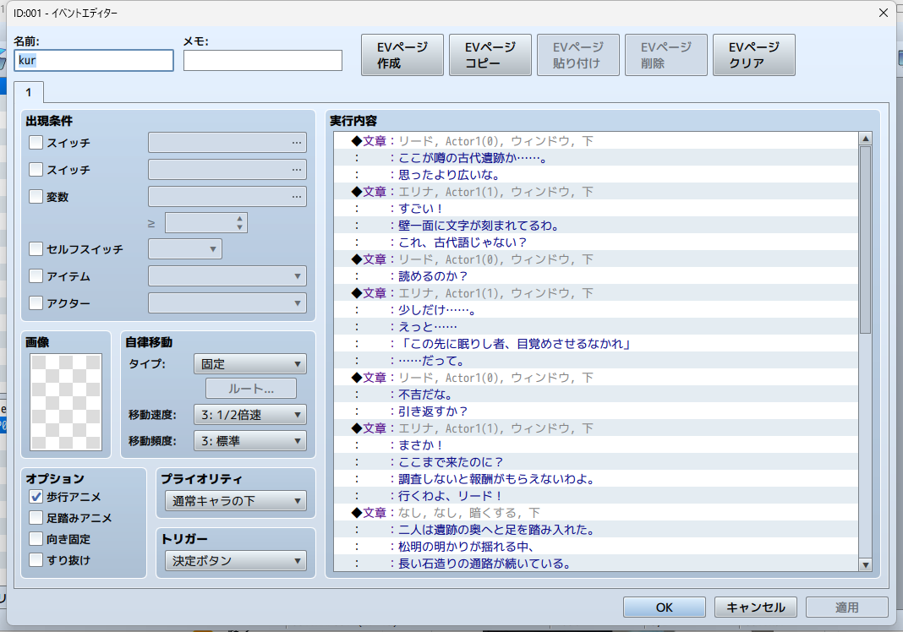

RPGツクールMZで「文章の表示」を楽に打ち込む方法
やりたかったこと
RPGツクールMZでセリフを入力する作業、面倒じゃないですか。
イベントエディタを開いて、「文章の表示」を選んで、顔グラフィックを設定して、名前を入れて、テキストを4行以内で打って、OKを押して……。これを何十回、何百回と繰り返す。
テキストファイルに書いたセリフを一発で流し込めないか？と思って調べて、作りました。
先行例を調べてみた
同じ悩みを持つ人は多いようで、いくつかの既存ツール・プラグインが見つかりました。
Text2Frame（MV/MZ プラグイン）
おそらく最も有名な先行例。テキストファイルからイベントコマンドに変換するMZ/MV用プラグインです。「文章の表示」だけでなく、選択肢やスイッチ操作などほぼ全てのイベントコマンドに対応しているのが強力。
- GitHub: yktsr/Text2Frame-MV
- 解説記事: 脚本のコピペ地獄をなくすプラグインの紹介
- 方式: ツクール内のプラグインコマンドとして実行
非常に高機能ですが、プラグインなのでツクールを開いて実行する必要があります。また独自の記法を覚える学習コストがあります。
データベースコンバーターMV（Steam公式ツール）
RPGツクールMV公式の制作支援アプリ。データベース・コモンイベント・マップイベントの内容をExcel/CSV形式に相互変換できます。Steamで無料配布されています。
セリフだけでなくデータベース全体を扱えますが、CSVの構造が複雑で、セリフ入力に特化した使い方には向いていません。
だくまた イベント変換ツール
だくまたゲーム制作ブログで公開されているツール。テキストファイルからJSONイベントコマンドに変換する方式で、アプローチとしてはこのツールに最も近い。コモンイベントにも対応。開発中（v0.01）。
MZ Dialogue Manager（英語・有料）
itch.io で販売されているスタンドアロンアプリ。MapXXX.json と CommonEvents.json から既存セリフを抽出・編集・再挿入できます。どちらかというと翻訳や既存テキストの一括修正が主な用途。
VSCode拡張 rpgmaker-text
kido0617さんの紹介記事。VSCodeでセリフを書くときに4行ごとにボーダーを表示するプラグイン。変換機能はないですが、テキスト作成の補助として使える。
先行例のまとめ
| ツール | 方式 | ツクール必要？ | 特徴 |
|---|---|---|---|
| Text2Frame | MZプラグイン | 必要 | 全コマンド対応。最も高機能 |
| DBコンバーターMV | CSV変換 | 不要 | 公式ツール。汎用的 |
| だくまた | JSON変換 | 不要 | 開発中。アプローチが近い |
| MZ Dialogue Manager | JSON編集 | 不要 | 英語。既存テキスト編集向き |
どれも良いツールですが、「日本語GUI」「リアルタイムプレビュー」「チェッカー」「イベント自動作成」を全部備えたものは見当たりませんでした。というわけで作ります。
MZのデータ構造を調べる
RPGツクールMZのマップデータは data/MapXXX.json というJSONファイルに保存されています。イベントコマンドもJSONの配列として入っている。つまり、JSONを直接書き換えればツクールを開かずにセリフを追加できる。
「文章の表示」のJSON構造はこうなっています：
code 101 — 文章の表示ヘッダ
{
"code": 101,
"indent": 0,
"parameters": ["Actor1", 0, 0, 2, "リード"]
}parameters: [顔ファイル名, 顔番号(0-7), 背景(0-2), 位置(0-2), 名前]
code 401 — テキスト行
{"code": 401, "indent": 0, "parameters": ["こんにちは！"]}
{"code": 401, "indent": 0, "parameters": ["今日はいい天気ですね。"]}101の後に最大4個並ぶ。
パラメータの意味：
| パラメータ | 値 | 意味 |
|---|---|---|
| 背景 | 0 / 1 / 2 | ウィンドウ / 暗くする / 透明 |
| 位置 | 0 / 1 / 2 | 上 / 中 / 下 |
| 顔番号 | 0-7 | 顔シート内の位置（4列×2行） |
公式のイベントコマンドリファレンスはプラグイン講座内のスクリプトリファレンス（PDF）にあります。
テキストフォーマットを設計する
セリフを書くためのフォーマットを考えました。こんな感じ：
# シーン1: 冒頭
【リード/Actor1:0】
ここが噂の古代遺跡か……。
思ったより広いな。
【エリナ/Actor1:1】
すごい！
壁一面に文字が刻まれてるわ。
これ、古代語じゃない？
# ナレーション
{bg=1}
【】
二人は遺跡の奥へと足を踏み入れた。ルールはシンプル：
【名前/顔ファイル:番号】で話者を指定【】でナレーション（名前・顔リセット）- 空行でメッセージの区切り
{bg=0/1/2}で背景変更、{pos=0/1/2}で位置変更#でコメント- 4行超えは自動分割
- MZの制御文字（
\C[n],\V[n],\N[n]等）もそのまま使える
ツールを作る
Pythonで実装して、PyInstallerでexe化しました。tkinterでGUIも付けています。

左がエディタ（シンタックスハイライト付き）、右がリアルタイムプレビュー
機能一覧：
- リアルタイムプレビュー — テキストを書くと右側に変換結果が即表示
- チェッカー — 顔番号の範囲外、存在しない顔ファイルなどを警告
- イベント自動作成 — 存在しないイベントIDを指定すると、空きタイルに自動配置
- 追加/置換モード — 既存コマンドの末尾に追加 or 全て置換
- コモンイベント対応 — CommonEvents.json にも書き込める
- バックアップ世代管理 — タイムスタンプ付きで10世代保持
- エンコーディング自動判定 — UTF-8 / BOM / Shift-JIS / CP932
実際に動かしてみる
テストプレイで確認。テキストファイルから生成されたセリフがそのまま表示されます。

顔グラフィック + 名前が自動設定される

4行セリフもちゃんと表示

ナレーション（背景「暗くする」）にも切り替わる

イベントエディタで見ると、ちゃんとコマンドが並んでいる
テキストフォーマット早見表
| 書き方 | 意味 |
|---|---|
【リード/Actor1:0】 | 名前「リード」、顔グラ Actor1 の番号0 |
【村人】 | 名前「村人」、顔グラなし |
【】 | ナレーション（名前・顔リセット） |
{bg=0} / {bg=1} / {bg=2} | 背景: ウィンドウ / 暗くする / 透明 |
{pos=0} / {pos=1} / {pos=2} | 位置: 上 / 中 / 下 |
{mode=replace} | 既存コマンドを置換（デフォルトは追加） |
# | コメント |
| 空行 | メッセージの区切り |
ダウンロード
ツールは無料で配布しています。Python不要、exe単体で動きます。
※ ウイルス対策ソフトがexeをブロックする場合があります。その場合は除外設定を追加してください。
注意事項
- 書き込み前にツクールMZを必ず閉じてください。開いたまま実行すると上書きされます。
- 元ファイルはタイムスタンプ付きで自動バックアップされます。
- 顔ファイル名はプロジェクトの
img/faces/にあるファイル名（拡張子なし）を指定してください。
セリフ打ち込み代行も受け付けています
「自分で変換するのは面倒」「テキストの整形をお任せしたい」という方へ。
台本をお送りいただければ、MapXXX.json に変換してお返しします。
顔グラ指定・背景切替・ナレーション対応。納品後の修正1回無料。
プラグイン独自形式など標準外の場合もご相談ください。検討・対応します。